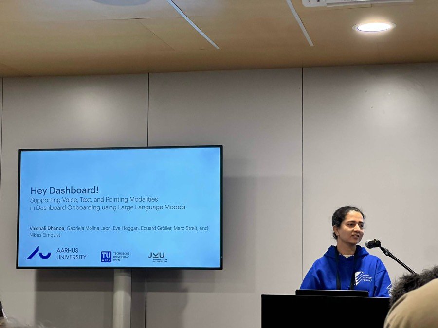
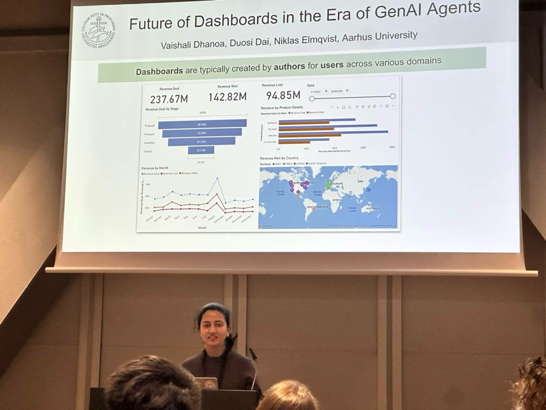
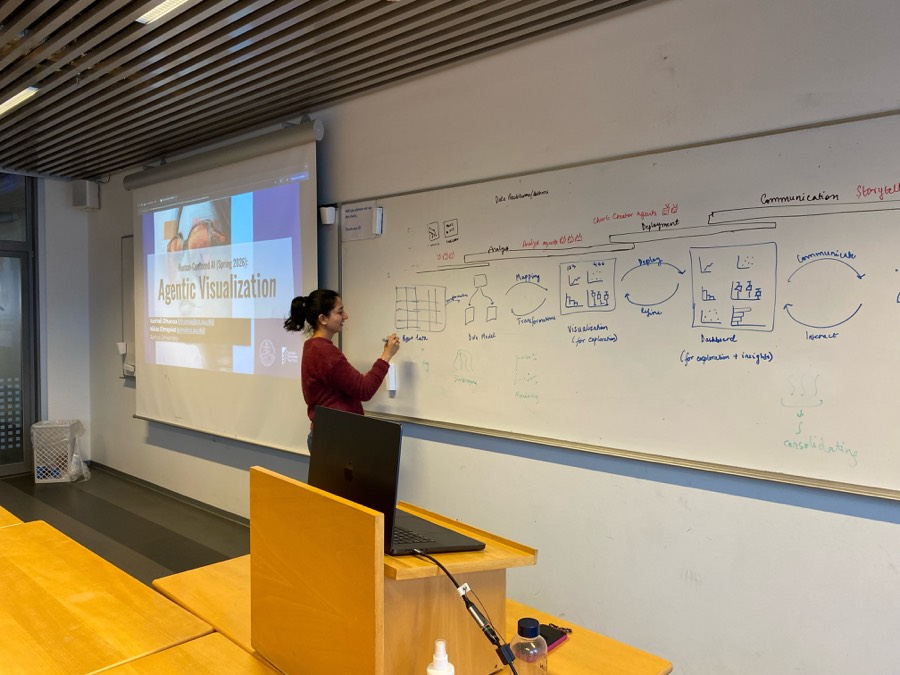
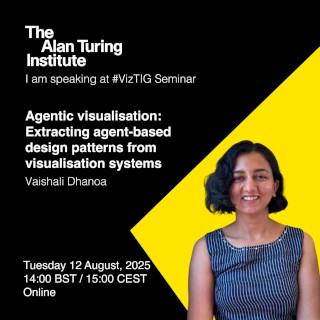

My research interests include data visualization, storytelling with data, and human-centered AI. I work closely with domain experts to understand how they use and interact with data through visualization dashboards to make decisions. My work aims to improve their understanding of these dashboards through tools that I build together with my collaborators. Recently, I have started leveraging AI capabilities to enhance user understanding of visualization dashboards. I am curious about how AI will shape the future of data visualization and dashboards and reduce the knowledge gap between dashboard authors and users.
My work requires me to travel often between Denmark and Austria. When I am not traveling, I enjoy biking and petting cats wherever I go.
Niklas Elmqvist, Eve Hoggan, Hans-Jörg Schulz, Marianne Graves Petersen, Peter Dalsgaard, Ira Assent, Olav W. Bertelsen, Akhil Arora, Kaj Grønbæk, Susanne Bødker, Clemens Nylandsted Klokmose, Rachel Charlotte Smith, Sebastian Hubenschmid, Christoph A. Johns, Gabriela Molina León, Anton Wolter, Johannes Ellemose, Vaishali Dhanoa, Simon Aagaard Enni, Mille Skovhus Lunding, Karl-Emil Kjær Bilstrup, Juan Sánchez Esquivel, Luke Connelly, Rafael Pablos Sarabia, Morten Birk, Joachim Nyborg, Stefanie Zollmann, Tobias Langlotz, Meredith Siang-Yun Chou, Jens Emil Sloth Grønbæk, Michael Wessely, Yijing Jiang, Caroline Berger, Duosi Dai, Michael Mose Biskjaer, Germán Leiva, Jonas Frich, Eva Eriksson, Kim Halskov, Thorbjørn Mikkelsen, Nearchos Potamitis, Michel Yildirim, Arvind Srinivasan, Jeanette Falk, Nanna Inie, Ole Sejer Iversen, and Hugo Andersson. 2025.Participatory AI: A Scandinavian Approach to Human-Centered AI.arXiv preprint arXiv:2509.12752. https://doi.org/10.48550/arXiv.2509.12752
Visualization, AI, Human-Centered AI, and AccessibilityNokia Bell Labs, Cambridge, UK
Agentic Visualization: Extracting Agent-based Design Patterns from Visualization SystemsEuroVis 2026, Nottingham, UK
Hey Dashboard!: Supporting Voice, Text, and Pointing Modalities in Dashboard OnboardingCHI 2026, Barcelona, Spain (April 2026)
Future of Dashboards in the Era of GenAI AgentsCHI 2026 Workshop, Barcelona, Spain (April 2026)
Agentic Visualization (two lectures, Human-Centered AI course, Spring 2026)Aarhus University, Denmark

Hey Dashboard!, CHI 2026

CHI 2026 workshop

Lecture at Aarhus University
2025
Agentic Visualization: Extracting Agent-based Design Patterns from Visualization SystemsTU Wien, Vienna, Austria
From Data to Communication: Supporting Interactive Exploration and Communication of DataTU Graz, Austria (Virtual)
Agentic Visualization: Extracting Agent-based Design Patterns from Visualization SystemsThe Alan Turing Institute, London, UK (Virtual)

Alan Turing Institute talk announcement
2024
D-Tour: Semi-Automatic Generation of Interactive Guided Tours for Visualization Dashboard OnboardingIEEE Conference 2024, Florida, USA (Virtual)
2023
Fuzzy Spreadsheet: Understanding and Exploring Uncertainties in Tabular CalculationsIEEE Conference 2024, Oklahoma, USA
2022
A Process Model for Dashboard OnboardingEuroVis Conference 2022, Rome, Italy
Awards & Funding
Best Paper Runner-Up, IEEE CG&A 2025Agentic Visualization
Best Paper Runner-Up, IEEE VISxGenAI Workshop 2025Multi-Agent Data Visualization and Narrative Generation
Small Grant, Pro2Future GmbH 2024For expertise as a visualization researcher
Research stay funding, OEFG and Erasmus (approx. €4k) 2023Research stay at Aarhus University
CV
EDUCATION
PhD in Information VisualisationJohannes Kepler University, Linz, Austria · Oct 2019 – Oct 2024From Analysis to Communication: Supporting Users in Understanding Complex Spreadsheets and Dashboards
Visiting ResearcherAarhus University, Aarhus, Denmark · Aug 2023 – Oct 2023
Master in Computer Science (Pervasive Computing)Johannes Kepler University, Linz, Austria · Mar 2016 – Apr 2019
Bachelor’s Degree in Computer EngineeringJaypee Institute of Information Technology, Noida, India · Jul 2010 – May 2014
PROFESSIONAL EXPERIENCE
PostDocTechnical University, Vienna, Austria · Jan 2025 – Present
PostDocAarhus University, Aarhus, Denmark · Oct 2024 – Present
Senior ResearcherPro2Future GmbH, Linz, Austria · Jun 2019 – Dec 2024
Teaching AssistantJohannes Kepler University, Linz, Austria · Mar 2018 – Jun 2018
Software DeveloperIntel Mobile Communications, Linz, Austria · Jul 2016 – May 2019
Software EngineerPaxcel Technologies Pvt Ltd, New Delhi, India · Jan 2015 – Aug 2015
Software Engineer TraineeMTree Software Pvt Ltd, Noida, India · Jul 2014 – Jan 2015
CERTIFICATIONS
Project Management CertificationInternational Project Management Association · Nov 2023
Contact
dhanoa@cs.au.dk Department of Computer Science, Aarhus University, Denmark